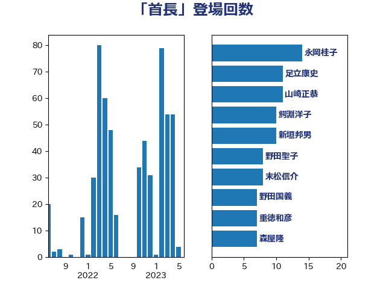

単語「首長」

| 赤羽一嘉 | 公明党 | 53 回 |
| 足立康史 | 日本維新の会 | 28 回 |
| 田村憲久 | 自由民主党 | 13 回 |
| 芳賀道也 | 国民民主党 | 12 回 |
| 萩生田光一 | 自由民主党 | 12 回 |
| 小寺裕雄 | 自由民主党 | 10 回 |
| 斎藤嘉隆 | 立憲民主党 | 10 回 |
| 小泉進次郎 | 自由民主党 | 8 回 |
| 平山佐知子 | 無所属 | 8 回 |
| 末松信介 | 自由民主党 | 8 回 |
| 武田良太 | 自由民主党 | 8 回 |
| 白石洋一 | 立憲民主党 | 8 回 |
| 野田聖子 | 自由民主党 | 8 回 |
| 伊藤孝恵 | 国民民主党 | 7 回 |
| 新垣邦男 | 立憲民主党 | 7 回 |
| 浅田均 | 日本維新の会 | 7 回 |
| 坂本哲志 | 自由民主党 | 6 回 |
| 岸真紀子 | 立憲民主党 | 6 回 |
| 逢坂誠二 | 立憲民主党 | 6 回 |
| 浅野哲 | 国民民主党 | 5 回 |
| 階猛 | 立憲民主党 | 5 回 |
| 井上信治 | 自由民主党 | 4 回 |
| 伊佐進一 | 公明党 | 4 回 |
| 伊藤岳 | 日本共産党 | 4 回 |
| 徳永エリ | 立憲民主党 | 4 回 |
| 杉久武 | 公明党 | 4 回 |
| 根本幸典 | 自由民主党 | 4 回 |
| 梅村みずほ | 日本維新の会 | 4 回 |
| 江島潔 | 自由民主党 | 4 回 |
| 菅義偉 | 自由民主党 | 4 回 |
| 西田実仁 | 公明党 | 4 回 |
| 進藤金日子 | 自由民主党 | 4 回 |
| 重徳和彦 | 立憲民主党 | 4 回 |
| 上田清司 | 国民民主党 | 3 回 |
| 倉林明子 | 日本共産党 | 3 回 |
| 北側一雄 | 公明党 | 3 回 |
| 古川康 | 自由民主党 | 3 回 |
| 堀内詔子 | 自由民主党 | 3 回 |
| 大口善徳 | 公明党 | 3 回 |
| 小熊慎司 | 立憲民主党 | 3 回 |
| 小野泰輔 | 日本維新の会 | 3 回 |
| 山崎誠 | 立憲民主党 | 3 回 |
| 山際大志郎 | 自由民主党 | 3 回 |
| 後藤祐一 | 立憲民主党 | 3 回 |
| 新藤義孝 | 自由民主党 | 3 回 |
| 松沢成文 | 日本維新の会 | 3 回 |
| 梶山弘志 | 自由民主党 | 3 回 |
| 河野太郎 | 自由民主党 | 3 回 |
| 浜口誠 | 国民民主党 | 3 回 |
| 源馬謙太郎 | 立憲民主党 | 3 回 |
| 熊田裕通 | 自由民主党 | 3 回 |
| 玉木雄一郎 | 国民民主党 | 3 回 |
| 石川大我 | 立憲民主党 | 3 回 |
| 福山哲郎 | 立憲民主党 | 3 回 |
| 美延映夫 | 日本維新の会 | 3 回 |
| 自見はなこ | 自由民主党 | 3 回 |
| 若松謙維 | 公明党 | 3 回 |
| 茂木敏充 | 自由民主党 | 3 回 |
| 西銘恒三郎 | 自由民主党 | 3 回 |
| 野中厚 | 自由民主党 | 3 回 |
| 金子恭之 | 自由民主党 | 3 回 |
| 音喜多駿 | 日本維新の会 | 3 回 |
| 高橋千鶴子 | 日本共産党 | 3 回 |
| 仁木博文 | 無所属 | 2 回 |
| 今村雅弘 | 自由民主党 | 2 回 |
| 佐藤英道 | 公明党 | 2 回 |
| 北神圭朗 | 無所属 | 2 回 |
| 嘉田由紀子 | 無所属 | 2 回 |
| 国定勇人 | 自由民主党 | 2 回 |
| 坂本祐之輔 | 立憲民主党 | 2 回 |
| 大家敏志 | 自由民主党 | 2 回 |
| 小西洋之 | 立憲民主党 | 2 回 |
| 山下貴司 | 自由民主党 | 2 回 |
| 山崎正恭 | 公明党 | 2 回 |
| 岩渕友 | 日本共産党 | 2 回 |
| 打越さく良 | 立憲民主党 | 2 回 |
| 有村治子 | 自由民主党 | 2 回 |
| 木村次郎 | 自由民主党 | 2 回 |
| 森まさこ | 自由民主党 | 2 回 |
| 浜地雅一 | 公明党 | 2 回 |
| 石井正弘 | 自由民主党 | 2 回 |
| 石川昭政 | 自由民主党 | 2 回 |
| 石川香織 | 立憲民主党 | 2 回 |
| 秋野公造 | 公明党 | 2 回 |
| 藤井比早之 | 自由民主党 | 2 回 |
| 藤木眞也 | 自由民主党 | 2 回 |
| 西村康稔 | 自由民主党 | 2 回 |
| 谷田川元 | 立憲民主党 | 2 回 |
| 足立敏之 | 自由民主党 | 2 回 |
| 遠藤敬 | 日本維新の会 | 2 回 |
| 里見隆治 | 公明党 | 2 回 |
| 鈴木貴子 | 自由民主党 | 2 回 |
| 長妻昭 | 立憲民主党 | 2 回 |
| おおつき紅葉 | 立憲民主党 | 1 回 |
| ながえ孝子 | 無所属 | 1 回 |
| 三ッ林裕巳 | 自由民主党 | 1 回 |
| 三木亨 | 自由民主党 | 1 回 |
| 上杉謙太郎 | 自由民主党 | 1 回 |
| 中島克仁 | 立憲民主党 | 1 回 |
| 中川宏昌 | 公明党 | 1 回 |
| 中曽根康隆 | 自由民主党 | 1 回 |
| 中谷一馬 | 立憲民主党 | 1 回 |
| 中野洋昌 | 公明党 | 1 回 |
| 丸川珠代 | 自由民主党 | 1 回 |
| 井上英孝 | 日本維新の会 | 1 回 |
| 井林辰憲 | 自由民主党 | 1 回 |
| 井野俊郎 | 自由民主党 | 1 回 |
| 保岡宏武 | 自由民主党 | 1 回 |
| 務台俊介 | 自由民主党 | 1 回 |
| 勝部賢志 | 立憲民主党 | 1 回 |
| 古川禎久 | 自由民主党 | 1 回 |
| 吉田豊史 | 日本維新の会 | 1 回 |
| 和田有一朗 | 日本維新の会 | 1 回 |
| 堀井学 | 自由民主党 | 1 回 |
| 堂故茂 | 自由民主党 | 1 回 |
| 塩川鉄也 | 日本共産党 | 1 回 |
| 塩田博昭 | 公明党 | 1 回 |
| 大串博志 | 立憲民主党 | 1 回 |
| 大塚耕平 | 国民民主党 | 1 回 |
| 大島敦 | 立憲民主党 | 1 回 |
| 大西英男 | 自由民主党 | 1 回 |
| 奥野総一郎 | 立憲民主党 | 1 回 |
| 守島正 | 日本維新の会 | 1 回 |
| 室井邦彦 | 日本維新の会 | 1 回 |
| 宮崎雅夫 | 自由民主党 | 1 回 |
| 寺田静 | 無所属 | 1 回 |
| 小川淳也 | 立憲民主党 | 1 回 |
| 小里泰弘 | 自由民主党 | 1 回 |
| 山口壯 | 自由民主党 | 1 回 |
| 山本剛正 | 日本維新の会 | 1 回 |
| 山田太郎 | 自由民主党 | 1 回 |
| 岩谷良平 | 日本維新の会 | 1 回 |
| 岸信夫 | 自由民主党 | 1 回 |
| 岸田文雄 | 自由民主党 | 1 回 |
| 市村浩一郎 | 日本維新の会 | 1 回 |
| 平井卓也 | 自由民主党 | 1 回 |
| 早坂敦 | 日本維新の会 | 1 回 |
| 早稲田ゆき | 立憲民主党 | 1 回 |
| 杉尾秀哉 | 立憲民主党 | 1 回 |
| 杉本和巳 | 日本維新の会 | 1 回 |
| 林芳正 | 自由民主党 | 1 回 |
| 柳ヶ瀬裕文 | 日本維新の会 | 1 回 |
| 柴田巧 | 日本維新の会 | 1 回 |
| 柿沢未途 | 無所属 | 1 回 |
| 森山浩行 | 立憲民主党 | 1 回 |
| 榛葉賀津也 | 国民民主党 | 1 回 |
| 横沢高徳 | 立憲民主党 | 1 回 |
| 橋本聖子 | 無所属 | 1 回 |
| 武部新 | 自由民主党 | 1 回 |
| 江田憲司 | 立憲民主党 | 1 回 |
| 池畑浩太朗 | 日本維新の会 | 1 回 |
| 河野義博 | 公明党 | 1 回 |
| 浜田聡 | NHK党 | 1 回 |
| 滝沢求 | 自由民主党 | 1 回 |
| 滝波宏文 | 自由民主党 | 1 回 |
| 熊谷裕人 | 立憲民主党 | 1 回 |
| 片山さつき | 自由民主党 | 1 回 |
| 牧島かれん | 自由民主党 | 1 回 |
| 玄葉光一郎 | 立憲民主党 | 1 回 |
| 田中健 | 国民民主党 | 1 回 |
| 田中英之 | 自由民主党 | 1 回 |
| 田島麻衣子 | 立憲民主党 | 1 回 |
| 田畑裕明 | 自由民主党 | 1 回 |
| 畦元将吾 | 自由民主党 | 1 回 |
| 矢倉克夫 | 公明党 | 1 回 |
| 石垣のりこ | 立憲民主党 | 1 回 |
| 礒崎哲史 | 国民民主党 | 1 回 |
| 福岡資麿 | 自由民主党 | 1 回 |
| 福島みずほ | 社会民主党 | 1 回 |
| 竹内譲 | 公明党 | 1 回 |
| 竹谷とし子 | 公明党 | 1 回 |
| 笠浩史 | 無所属 | 1 回 |
| 紙智子 | 日本共産党 | 1 回 |
| 細田健一 | 自由民主党 | 1 回 |
| 舞立昇治 | 自由民主党 | 1 回 |
| 船田元 | 自由民主党 | 1 回 |
| 若宮健嗣 | 自由民主党 | 1 回 |
| 荒井優 | 立憲民主党 | 1 回 |
| 菊田真紀子 | 立憲民主党 | 1 回 |
| 藤岡隆雄 | 立憲民主党 | 1 回 |
| 藤田文武 | 日本維新の会 | 1 回 |
| 西村智奈美 | 立憲民主党 | 1 回 |
| 赤嶺政賢 | 日本共産党 | 1 回 |
| 赤池誠章 | 自由民主党 | 1 回 |
| 辻清人 | 自由民主党 | 1 回 |
| 道下大樹 | 立憲民主党 | 1 回 |
| 野上浩太郎 | 自由民主党 | 1 回 |
| 金子恵美 | 立憲民主党 | 1 回 |
| 金村龍那 | 日本維新の会 | 1 回 |
| 鈴木憲和 | 自由民主党 | 1 回 |
| 長峯誠 | 自由民主党 | 1 回 |
| 阿部知子 | 立憲民主党 | 1 回 |
| 馬場伸幸 | 日本維新の会 | 1 回 |
| 高野光二郎 | 自由民主党 | 1 回 |
| 鬼木誠 | 立憲民主党 | 1 回 |
| 鰐淵洋子 | 公明党 | 1 回 |
| 鳩山二郎 | 自由民主党 | 1 回 |